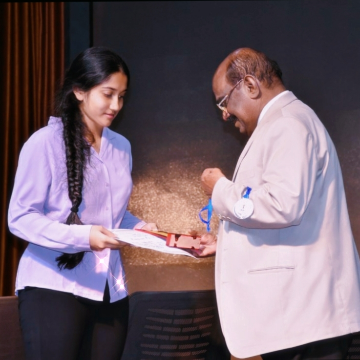
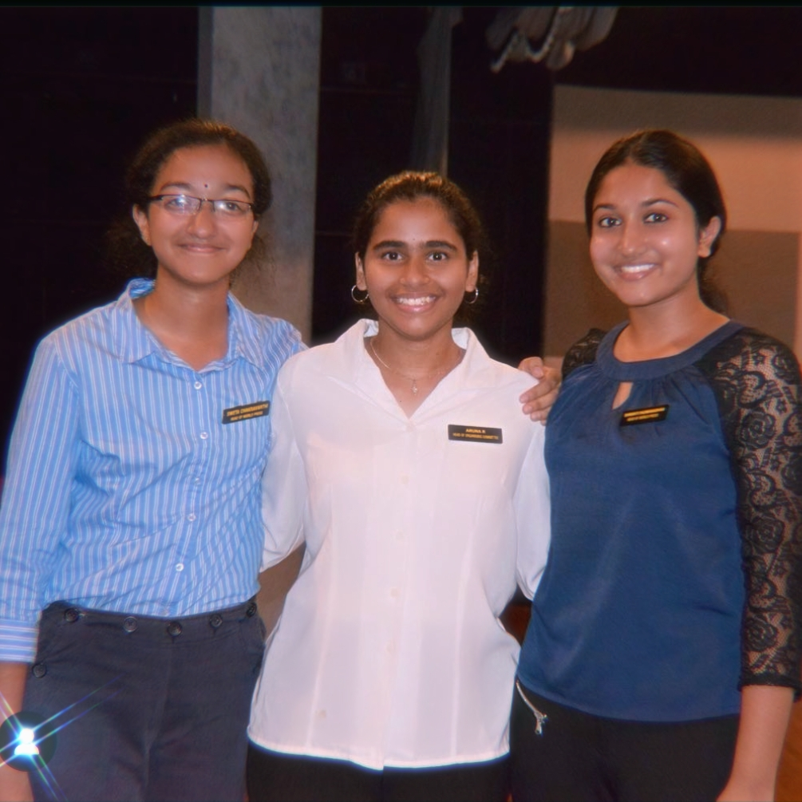
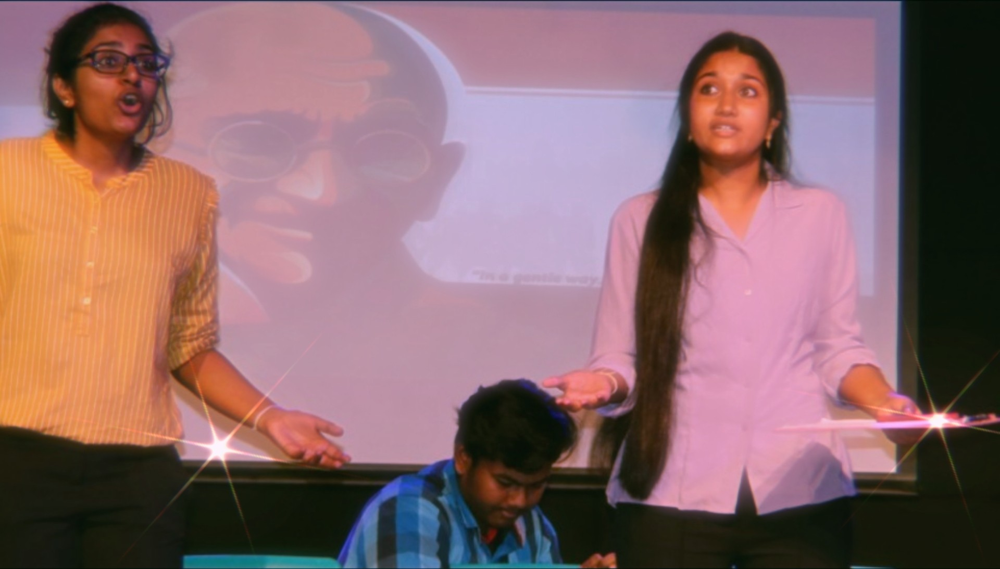

Co-Curricular Activities

Creative writing is one of my favorite hobbies! I had the wonderful oppurtunity of participating in the prestigious 'Albert Barrow Creative Writing Competition' in 2018 and won 2nd place at the 'ISC Regional Creative Writing Competition'.

I was the head of the 'World Press Committee' at my school's Model United Nations, and served as a key member of the organizing committee!

Theatre gives me a great chance to explore my range as an actor and bringing a script to life on stage at the end of every academic year, is the best thing about annual days!